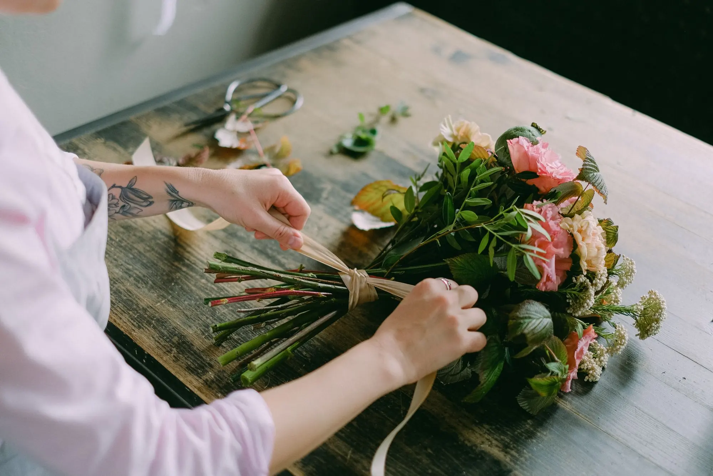

Con intención
Para un cumpleaños, un agradecimiento o porque sí.
Un ramo puede acompañar una celebración o alegrar un día cualquiera. Cuéntanos los colores, el estilo o la persona para quien lo imaginas.

Imagen de bancoLos ramos permiten jugar con formas, tonos y sensaciones. Puedes partir de una idea muy clara o dejar que la conversación abra posibilidades. Te ayudaremos a consultar qué flores hay y cómo podría tomar forma tu propuesta.
Un ramo dice lo que a veces no sabemos decir.
Para un cumpleaños, un agradecimiento o porque sí.
Comparte una paleta de color, una referencia o un estilo.
La selección floral se confirma directamente con la tienda.


No es solo reunir tallos: proporción, ritmo y color hacen que un ramo exprese algo propio.
El ramo ha sido una forma de acompañar celebraciones, agradecimientos y despedidas en muchas culturas. Su lenguaje no es una regla fija: cambia con la persona que lo recibe y con las flores de la estación. En Siempre Vive puedes partir de una emoción, un color o un recuerdo y consultar qué composición es posible preparar.
Retira el envoltorio que impida respirar a los tallos y colócalos en un jarrón limpio con agua. Si hay alimento floral, sigue la dosis indicada.
Quita las hojas que quedarían sumergidas y recorta la base de los tallos. Así el agua se mantiene más limpia.
Renueva el agua, lava el jarrón si hace falta y vuelve a recortar ligeramente los tallos.
Elige un punto fresco, lejos de radiadores, sol directo y corrientes de aire; retira las flores marchitas.
Comprueba el nivel de agua y que ningún tallo esté fuera. Cambia el agua y elimina hojas sumergidas antes de dar el ramo por perdido.
Un ramo es flor cortada: no lleva tierra ni se «riega» como una planta. Su cuidado depende del agua del jarrón y del ambiente.
Uno limpio y estable, suficientemente alto para sostener los tallos sin aplastarlos. Si el ramo es voluminoso, distribuye los tallos sin forzar la apertura.
La base de los tallos debe permanecer sumergida, pero las hojas no. Revisa el nivel a diario y renueva el agua cada dos o cuatro días.
Un pequeño corte al cambiar el agua refresca la superficie de absorción. Retira antes hojas y flores dañadas para que no enturbien el agua.
No uses abono de maceta. Si recibes alimento específico para flor cortada, sigue la dosis del sobre; ayuda a mantener el agua en mejores condiciones.
El compacto da una silueta ordenada; el más abierto gana movimiento. Explica si irá en mesa, se entregará en mano o acompañará un evento.
Pregunta por la lista completa de especies del ramo: los lirios del género Lilium son tóxicos para gatos. La composición se puede orientar en consecuencia.
La flor o planta cambia un espacio cuando su tamaño, luz y función se tienen en cuenta.
Una composición baja permite conversar sin tapar a nadie.
Un ramo con volumen da una bienvenida inmediata, siempre lejos del sol directo.
Un formato ligero llena un rincón sin saturarlo.
Flores de perfume suave y tamaño moderado acompañan mejor un escritorio.
Escríbenos con tu idea para consultar disponibilidad y detalles. Las fotografías son de inspiración y no representan productos disponibles en tienda.